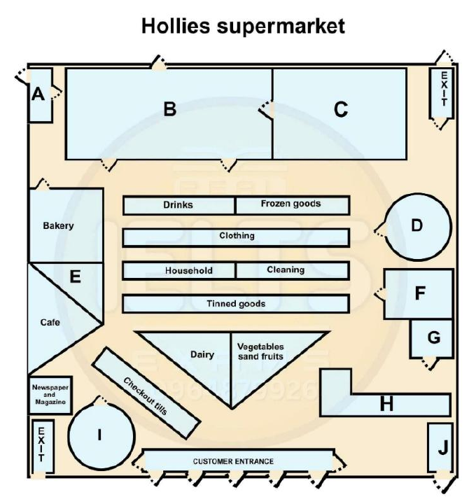

Phiếu trả lời Listening
Bấm số câu để nhảy tới câu đó. Bài làm được tự lưu trên máy này. Thời gian thi thật: khoảng 30 phút.
PART 1 Questions 1–10
Complete the notes below.
Write ONE WORD AND/OR A NUMBER for each answer.
The London Relocation Services Customer’s name Anna Woods Customer’s personal details
Other information
Requirements for the new property Location:
Property details:
|
📜 Lời thoại Part 1
Part 1. You will hear a telephone conversation between a woman who is moving to London and an employee of a relocation service. First you have some time to look at questions 1 to 7. Now listen carefully and answer questions 1 to 7. London Relocation Services, Daniel speaking.
How may I help you? Good morning.
My family and I are moving to London later this year and I wonder if you can help? Sure. First of all, I'll need to get some personal details. May I take your full name, please? It's Anna Woods.
Thanks. Where are you moving from? Northern Ireland, just outside Belfast, actually. Right.
And what's your current address? It's 118 Fordyce Park. I'll spell that for you. It's F-O-R-D-Y-C-E.
And that's in Ballysillan. And what's the postcode? It's B-T-14-9-B-J. All right.
And could I take a contact phone number? I'll give you my mobile number as you can get me on that anytime. It's 07-8400-51963. Great.
Got that. Now, we always like to get a bit more information about the families that we're moving. It helps with the search.
Are you moving for work? Yes, my husband's just got a new job in London. And what about you? Do you work? Well, I've been working as a teaching assistant recently, but I'm actually a qualified nurse and I'd like to get back into that if possible.
Right.
And do you have any children? Yes, a son. So we need to find a school for him. Is it a secondary school you'll be looking for? No, he's still in primary school.
He's not quite at the secondary level yet. Fine. So let's go on to talk about your requirements for the property.
Do you have a preferred location? Is your husband's job in the centre? No, it's in East London, but we'd rather live somewhere quieter. Sure. There are some lovely areas in the south.
OK, that sounds great. Now, my husband doesn't want to spend too long commuting to work every day. So I imagine that ideally he'd like to be not too far from a station then? Yes, he drives now, but I guess that's not going to be possible and he's not keen on buses.
What about you or your son? Do you have any preferences? Does your son do any sport, for example? He's quite active, so I'm sure he'd love a park nearby to run around in. He doesn't do swimming or anything like that.
Great.
Before you hear the rest of the conversation, you have some time to look at questions 8 to 10. Now listen and answer questions 8 to 10. So what sort of property do you have in mind? We have friends who live in an amazing flat over there, but as we've always lived in a house, I think we'll stick with that.
We'd find it hard to adapt to a flat. OK. And size-wise, how many bedrooms would you like? Well, there's just myself, my husband and our son.
So you'd definitely need a two-bedroom property. But how about having a guest room? I might be able to find a three-bedroom property for you. Yes, that would be ideal.
We're sure to have family visiting often. All right, I've made a note of that. Now are there any other requirements for your new property? Well, it's not essential, but it'd be handy to have an office for when my husband works from home.
It doesn't need to be a big one. I guess it all comes down to budget. Yes.
OK, Anna. Well, I've certainly got enough to be getting on with and... That is the end of Part 1. You now have one minute to check your answers to Part 1.
PART 2 Questions 11–20
Questions 11–14
Choose the correct letter, A, B or C.
Starting work at Hollies supermarket
11 The supervisor starts her talk by explaining that employees have to
12 The supervisor says that when the supermarket is very busy, employees must
13 The supervisor explains that when employees have a positive attitude, it
14 The supervisor says it is essential to stay calm when a customer
Questions 15–20
Label the plan below.
Choose the correct letter, A–J, next to Questions 15–20.

15 Staff entrance
16 Manager’s office
17 Storage and unpacking
18 Kitchen
19 Cleaning equipment
20 Staff relaxation area
📜 Lời thoại Part 2
Part 2. You will hear a supervisor at Holly's Supermarket talking to a group of new employees. First, you have some time to look at questions 11 to 14. Now listen carefully and answer questions 11 to 14.
Welcome to Holly's Supermarket. I'm sure you'll all enjoy working in our dedicated team here. So, what will you be doing? Well, we're open Monday through Sunday, so you'll need to be able to work weekends as well as irregular weekday shifts.
These sometimes start at 5am or finish at 11pm. Your duties will include checking and unpacking lorry deliveries, as well as working on the shop floor, stocking shelves and so on. But you'll only be required to do manual lifting if the goods are light.
When the store is very busy, you'll also have to assess changing priorities. For example, if there's a queue at the tills, you'll jump on a spare one to help. If you notice something's been spilt and the surface is a little bit wet, you'll get a mop to clean it up.
No need to check with a manager first. Similarly, if bakery items are selling quickly, you'll help cook some more. And if a customer can't find, say, the apples, you'll instantly leave what you're doing and show them.
But you'll still get time off to relax too, of course. We pride ourselves on a positive attitude here. A little small talk shows you're interested in customers and are providing excellent service, just as long as you don't overdo it and keep another customer waiting.
And always smile. It forces you to stay positive and being generally upbeat makes your whole team happy too. This increases efficiency and gives a good impression to customers.
If it's quiet, help someone pack their bags. Customers really appreciate it, especially when they've bought more than they expected to. Staying calm's also a necessity.
If a customer's unhappy for any reason, keep cool and call for a supervisor to help defuse a situation if things are getting out of hand. Occasionally, when working tills, you'll find yourself waiting for someone to extract their wallet from the bottom of a cluttered bag, while a long queue of annoyed customers builds up. You have to make sure, however hard it might be, that you remain composed.
Before you hear the rest of the talk, you have some time to look at questions 15 to 20. Now listen and answer questions 15 to 20. So, now let's look at the plan of the supermarket.
Have you all got your plans? Okay, good. We'll start with the staff entrance. Today you came in through the customer entrance, clearly marked on the bottom of your plan, but in future, you'll enter through the door in the top left-hand corner of the diagram.
Please don't confuse this with the emergency exits in the top right-hand corner and bottom left. It's very important that these are kept clear at all times. Regarding the manager's office, some of you may have attended interviews here, when it was next to the newspaper and magazine sales area.
However, it's recently been moved and is now the circular space marked on the right of your plans. When the manager's not on the shop floor, that's where you'll find her. The storage and unpacking area.
You may be asked to help out here, both before and after opening hours. This is represented by the largest of the four rectangles in the top section of the plan. It tends to get very busy there at times, so please be careful on entering and leaving this area.
There's a kitchen on site, where food and drinks are prepared for customers. It has specialist staff, but some of you may have to fill in occasionally. On the plan, it's shown by the triangular shape to the left of the tinned goods aisle.
It's very busy, as many customers like to take a break in the cafe and read a newspaper, before or after doing their shopping. Cleaning equipment is stored in a cupboard. It's the smaller of the two squares marked near the vegetable and fruit section, and can come in very handy.
You'd be surprised how often we have to mop up squashed tomatoes or grapes. Finally, you'll be pleased to know there's a separate staff relaxation area. This is at the top of your plan, between the frozen goods section and the exit.
As well as comfortable chairs, there's also a microwave for heating up snacks and a drinks dispenser. So, let's go there now.
PART 3 Questions 21–30
Questions 21–26
What reason do teachers give for using each of the following picture books with children?
Choose SIX correct letters, A–I, next to Questions 21–26.
Reasons
A The pictures show changing times of day.
B The words are fun to say out loud.
C It has an uncommon plot structure.
D The text can easily be turned into song.
E The pictures were done by a famous illustrator.
F There is a surprise at the end of the story.
G The pictures are simple line drawings.
H It was published very recently.
I It features well-known characters.
Picture books
21 Spy Friends
22 Goodnight Little Rabbit
23 The Boat Party
24 Puppy and Friends
25 Hats and Socks
26 A Family Adventure
Questions 27 and 28
Choose TWO letters, A–E.
27–28 Which TWO points from Smith’s article about picture books did both speakers find surprising?
Questions 29 and 30
Choose TWO letters, A–E.
29–30 Which TWO aspects of picture books do the speakers agree to talk about in their presentation?
📜 Lời thoại Part 3
Hi, are you ready to discuss our presentation? Yeah, sure.
So, what are we going to say about teachers reading picture books with young children? I think we should start with the reasons why teachers use picture books. The journal article we read mentioned several picture books, and why they're popular with teachers. Right.
Like, I spy friends. It's a lovely story. Yeah.
The children like to find the familiar faces from the fairy tales they know so well. And they're all doing predictable things. The article said children find this familiarity very comforting.
Yes. Now, how about Goodnight Little Rabbit, which has those delightful pictures? I love the way the colours get darker as the book progresses, indicating how evening turns into night. Me too.
The article said that's why teachers like it. Very cute. And a good example of visual subtext.
Hard to believe that it came out over 60 years ago. It's still relevant. I really liked what the article said about the boat party.
There's a lot of repetition, which I think would be great for vocabulary development. That's true. But apparently it's the images that make it popular with children.
The artist is really well known, and children often ask for her books. Oh, that's good to know. And shall we also include Puppy and Friends? Yes.
It sounds like an innocent title, but the article warns that there's a bit of a fright, you know, the one on the last page when the puppy suddenly encounters the scary cat. Teachers like to use this to help children explore their emotions. Sounds good.
Hats and Socks is a good one. It doesn't really have a beginning and an end, does it? Which is unusual. That's why teachers like this one, though.
Because it's so different, it's good for children to hear a story that doesn't follow the usual pattern. And the pages are so full of life and colour. A good choice.
OK. And for our last one, how about A Family Adventure? This one uses a lot of the same language throughout, which I think can help with letter and word recognition. Teachers say it has a really poetic feel to it.
They often sing it to a simple tune. Yes, and it's full of beautiful watercolours too. Before you hear the rest of the discussion, you have some time to look at questions 27 to 30.
Now listen and answer questions 27 to 30. In the next part of our presentation, shall we look at some of the other research? I really liked Smith's article about the history of picture books. Picture books haven't been around for that long, of course.
And as we know from our reading lists, there's a lot of research on them already. Smith makes some interesting points. Yes, one thing that shocked me was that some people don't consider picture books as proper writing because they don't have enough words in them.
Yes, that was unexpected for me as well. I think they should be just as respected as other works of fiction. Smith also mentioned that books from other countries are very popular here, even though they don't show our daily life.
I think that's interesting. But it's the same for adult fiction too. People want variety.
What I didn't realise is how fixed the number of pages is. Me neither. I wasn't expecting that they're so strictly limited to 32 pages.
It's important, so let's include it. Alright. Now let's think about other aspects of picture books we want to include in our presentation.
How about the characters? Okay, well, a lot of them feature animals, or families often in very traditional roles. But do you think we need to talk about that? For me, the main thing is that they are mostly printed as board books. The cardboard material makes it easy for young children to turn their pages.
I agree. And it's essential for children to hold books and learn how they open at the front, and that the text goes in a certain direction. Good point.
Why don't we also discuss how culture is important in picture books, like the importance of respecting the elderly? Yes, it's probably different all over the world. Would it be interesting to make a comparison between modern and historical picture books and consider future directions for the genre? It sounds interesting, but I don't have any research on that, so we'd better leave it. So what's next?
We don't need… That is the end of Part 3. You now have 30 seconds to check your answers to Part 3.
PART 4 Questions 31–40
Complete the notes below.
Write ONE WORD ONLY for each answer.
Geography – 331 Field Trip The James Bay Road
Radisson Research Centre
The Trans-Taiga Road
The Taiga
|
📜 Lời thoại Part 4
Part 4 You will hear a geography professor telling his class about an upcoming field trip to the far north of Quebec in Canada.
First, you have some time to look at questions 31 to 40. Now listen carefully and answer questions 31 to 40. Good morning.
Next week is the Geography 331 field trip to the far north of Quebec. Today I'll discuss your trip and your tasks. As you know, you will be close to the Arctic Circle.
You're going to travel up the James Bay Road through a region that is very remote and uninhabited, yet very beautiful. The highway is 620 km long, but it's fully paved for the entire length. Where the highway begins, there is a roadside office where you must stop.
The road is remote, so your registration is very important in case of an emergency. The office is staffed 24 hours per day, 7 days per week. You have to sign in to go up the road and sign out upon your return.
For additional safety, at different places along the highway, telephones have been installed which connect with staff in the office. Remember, there is no mobile service in this remote area. The first work of your field trip is at the end of the James Bay Road in Radisson, a small town of only 300 inhabitants.
You will stay at Radisson Research Centre, which works with various universities and Hydro-Québec to carry out studies into the ecology of the region. Because the Research Centre and the road exist as a result of the development of hydroelectricity complexes in northern Quebec, Hydro-Québec is responsible for all emergency assistance and security of all visitors. Your first few days at the Centre will be spent attending lectures about their past research.
You will hear that they have paid particular attention to any disturbance to the land caused by insects. After that, you will visit the various outpost stations. There are three of them, and when you visit them, you will be able to observe how data on the varying patterns of the climate is collected and published for scientific research.
The second part of your field trip is back down the James Bay Road to the Trans-Taga Road, which is the northernmost continuous unpaved road in eastern North America. In fact, it's very uneven gravel, so drivers have to be very careful. Hydro-Québec cautions that driving over rocks on the rough road may cause severe damage to the car.
Any breakdown is serious, as repairs are costly. Along the way, you will be stopping at two hydroelectric generating stations, each on a different river. There, you will meet with engineers who will explain and demonstrate how rainfall has an impact on producing electric energy.
Your last two days of the trip will be spent camping out in the taiga on the Canadian Shield. Taiga is the Russian term for a type of forest. You will find the region is relatively poor in the number of plant species, yet there is a great variety of wildlife that can be seen.
You'll go to an area that once had forest fires, and you'll see how the landscape has naturally small rocky hills which confine the lower wetlands. These low-lying areas are called muskeg, which is made up of slowly decomposing plants. It is not safe to walk on it, as it has pools that are not easily seen, so keep to the rocks.
The muskeg is home to many small birds and waterfowl. In fact, there are at least 60 varieties, so keep your waterproof digital cameras handy so you can take plenty of pictures. Then we will have documentation of the existing waterfowl, as some are becoming extinct.
Water is a problem in this area, so you'll also be collecting test tubes of water to bring back to our research lab for analysis. It needs to be monitored for pollution that may be caused by rainfall coming from the south. That is the end of part four.
You now have one minute to check your answers to part four. That is the end of the listening test. You now have 10 minutes to transfer your answers to the listening answer sheet.
Phiếu trả lời Reading
Bấm số câu để nhảy tới câu đó. Bài làm được tự lưu trên máy này. Thời gian thi thật: 60 phút.
READING PASSAGE 1 Questions 1–13
You should spend about 20 minutes on Questions 1–13, which are based on Reading Passage 1 below.
Deep sea discovery
Recent research has provided new insights into how fish communicate
A Nico Michiels is an ecologist from the University of Tubingen in Germany who spends part of each year in Egypt, where he dives in the Red Sea, observing fish life and gathering data on its coral reefs. In September 2007 he decided to find out how far red light could penetrate the ocean depths. Seawater absorbs different colours at different depths, and as an experienced diver, Michiels was aware that red light is extinguished not far below the surface whereas blue-green light penetrates deeper. To find out the depth at which red disappeared in this particular ocean, however, he attached a special plastic filter to his dive mask which was designed to block out all colours except red. Then he began to descend. In theory, once he reached about 15 metres, he should have been plunged into darkness. Instead, something totally unexpected happened. Sure enough, 20 metres down it was as dark as night. ‘All the fish disappeared. With no light from the surface, they were effectively black and had become invisible,’ he says. ‘But it didn’t stay black for long. Then I saw a group of goby fish with bright red eyes lit up against the background. After that red spots began to show up all over the reef.’
B Even with the red filter removed, Michiels could pick them out without much trouble once his eyes grew accustomed to the gloom. It seems strange that no diver or researcher had spotted all this red before, but as Michiels points out, no one saw it because no one expected to see it. On that one dive Michiels discovered three fish species with prominent red markings, and has found many others since.
C But how can fish appear red where there’s no red light? Ordinary red pigments* look red because they reflect red light while absorbing all other wavelengths. At 20 metres down, there had to be some other explanation for the red Michiels was seeing. He suspected fluorescence. Fluorescent pigments behave differently from ordinary ones: they receive incoming light of one wavelength, for example blue, and emit light of a longer wavelength, in this case red. On the reef in the Red Sea during daytime, the most likely explanation was that the predominantly blue and green wavelengths at depth triggered the emission of fluorescent red in the fish.
D With only a week left in Egypt, and lacking the equipment to confirm that the fish were fluorescent, Michiels photographed as many of them as he could. Then once back in Germany, he bought an assortment of tropical fish and installed them in his lab. Here he confirmed that the fish did indeed fluoresce. In most of the fish he looked at, the fluorescence could be traced to specialised pigment cells that lie in the skin beneath the scales. These cells contain ‘guanine crystals’, which scatter light to give fish their silvery sheen. However, Michiels says they are still not sure exactly what is fluorescing. ‘It’s not the crystals themselves. It’s probably a fluorescent protein built into the crystals, and we have a suspicion that it might be made by bacteria.’
E Intrigued, Michiels began a systematic search for red fluorescence in reef fish. He and his colleagues, Nils Anthes and Dennis Sprenger, have identified some 50 species with red fluorescence. The most common markings tend to be on the body towards the head and to a lesser extent around the eyes, and then the fins. To Michiels, the distribution of these markings is one of the strongest indications that red fluorescence has a very particular function: communication with other members of the species. According to several recent studies, a whole range of animals employ fluorescence as a natural highlighter to boost the visibility of body parts they use to signal, for example to ward off enemies. In reef fish, the red tends to be confined to parts of the body used to signal, suggesting these markings serve a similar function. But instead of highlighting an existing colour, the fluorescence gives the fish a colour that otherwise wouldn’t exist. For example, fish commonly use eye rings to signal that they are present and their direction of gaze, and Michiels suspects that red-eyed gobies use signals to indicate their location and keep their group together.
F Red light, whatever its source, doesn’t travel far through water, which suggests signals are intended to be private, seen only by nearby fish of the right species. There are several lines of evidence to support this, says Michiels. And closely related species do not have completely identical markings, which suggests they might be important in species recognition.
G Michiels suspects red fluorescence has another important role for some reef fish: helping them blend in. During his first dive with the red filter, he noticed corals glow a dark but faint red too. Against this irregular red background, a fish that glows red all over would be hard to distinguish. More compelling for Michiels is the case of the scorpionfish, which lies perfectly still until food swims past which it then sucks in.
H Yet if red plays any part in a fish’s life then it must be able to see it. Fish that live in a world dominated by blue-green light are assumed to have eyes tuned to those wavelengths, and most marine fish that have been studied are thought incapable of seeing red. One exception is the seahorse, whose eyes are sensitive to red. As for the other fish, it remains to be seen.
* pigments: a pigment is a substance that gives something a particular colour
Questions 1–6
Choose TRUE if the statement agrees with the information given in the text, choose FALSE if the statement contradicts the information, or choose NOT GIVEN if there is no information on this.
1 During his 2007 dive, Michiels expected to encounter total darkness at about 15 metres.
2 Michiels could see the red markings on fish without the aid of the red filter.
3 Other divers had assumed they would see fish with red markings.
4 All the fish with red markings that Michiels found during his diving expeditions came from the Red Sea.
5 Michiels first thought of the possibility that fish could fluoresce while he was in Germany.
6 Michiels remains uncertain as to what creates fluorescence in fish.
Questions 7–13
Complete the notes below.
Write ONE WORD ONLY from the passage for each answer.
Michiels’s findings Michiels has observed:
Some of Michiels’s beliefs are that:
Other benefits of red fluorescence:
The ability to see red amongst fish:
|
|---|
READING PASSAGE 2 Questions 14–26
You should spend about 20 minutes on Questions 14–26, which are based on Reading Passage 2 below.
Jellyfish – The Dominant Species
A Jellyfish have become the curse of beach holidays, permeating every ocean on the globe, thriving in the Arctic and the tropics. In an ever-changing world where other species struggle to endure, jellyfish populations are on the rise.
To the untrained eye, these creatures drift aimlessly on the oceans’ currents and appear benign. In addition, they lack sharp claws, piercing teeth or even a brain. Despite this, they are armed with an amazing arsenal of weapons, especially the stinging power of their tentacles. As a result, jellyfish are among the most-feared, least-understood creatures in the seas.
B According to Dr Monty Graham, a jellyfish scientist at the University of South Alabama, US, ‘Jellyfish are a pretty good group of animals to track coastal ecosystems. When you start to see jellyfish numbers grow, that usually indicates a stressed system.’ While populations appear to be down this year, Dr Graham sees ‘a statistically solid increase’ over the longer term.
This increase first gained attention in the 1980s when a huge number of jellyfish, Atlantic Ocean natives named Mnemiopsis leidyi, devastated the Black Sea, an ecosystem already weakened by overfishing of anchovies. Scientists believe that this species of jellyfish came in on the bottom of a ship and then rapidly multiplied, feeding on anchovy eggs and the plankton that young fish rely on.
C Dense jellyfish aggregations can be a natural feature of healthy ocean ecosystems, but a clear picture is now emerging of more severe and frequent jellyfish outbreaks worldwide. Dr Anthony Richardson, from the University of Queensland, Australia, explains that once jellyfish gain a foothold, if conditions are right they can establish a massive population at the expense of other ocean life. The problem is that parts of the ocean might switch from being dominated by fish to being dominated by jellyfish.
D A study done by Richardson and his colleagues explores the causes behind jellyfish infestation, and the need for swift, decisive action to stem jellyfish takeover. Jellyfish outbreaks are linked directly to human actions, including overfishing, the input of fertilizer and sewage into the ocean, and climate change.
Overfishing has removed fish from marine ecosystems at astounding rates. According to Richardson, this has made it possible for jellyfish to take their place. ‘This is because small fish appear to keep jellyfish in check by predation (on jellyfish when they are very small) and competition (when feeding). So, once we remove fish, jellyfish can proliferate.’
Eutrophication is another human-caused change in the ocean that has likely contributed to jellyfish explosions. Eutrophication is an increase of nitrogen and phosphorus in the ocean, largely caused by fertilizer and waste run-off. This leads to algae blooms, which lower oxygen in the marine ecosystem, creating so-called ‘dead zones’, which have been increasing dramatically around the world. According to Richardson, these low-oxygen waters give jellyfish the advantage. ‘Fish avoid low-oxygen waters but jellyfish, having lower oxygen demands, not only survive but can thrive in these conditions as there is less predation and competition from fish.’
E Furthermore, Richardson and his colleagues speculate that climate change may expand the traditional geographical range of jellyfish. ‘As water warms, tropical species are moving towards the poles. Many venomous jellyfish species are tropical and could move into more densely populated subtropical and temperate regions.’
F Once jellyfish appear en masse in an ecosystem they can make it very difficult for fish to stage a comeback. By feeding on fish, the jellyfish successfully prevent fish from returning to their normal population numbers, says Richardson. ‘One can thus think of two alternate states with each being stable: one dominated by fish and the other by jellyfish. Unfortunately, where there is a jellyfish-dominated state then this does not support the nutritional needs of other fish, marine mammals, and seabirds.’ In other words an ecosystem that loses fish also loses the species that depend on fish for survival.
This state has been defined as a ‘monoculture of jellyfish’, an apt analogy since the situation shares similarities with other monocultures. When the rich biodiversity of tropical forests is replaced by plantations growing a single species of tree, an area of rich variety becomes a desert in terms of biodiversity, as do ocean ecosystems when jellyfish become the dominant species.
One result of large jellyfish populations is the economic effect it has had on the fishing industry. In the Gulf of Mexico, shrimp fishermen are struggling with a jellyfish boom that fills nets, causing them to break and resulting in millions of dollars in losses.
G Experts say that a greater understanding of jellyfish, including their ideal water temperature and feeding habits, is necessary to determine with certainty what is causing the recent massive invasion, and to come up with ways to combat it.
Due to the difficulty of turning ecosystems around once jellyfish have become dominant, Richardson and his colleagues propose focusing on ‘prevention rather than cure’. They recommend a halt to overfishing small fish that are vital to keeping jellyfish in check, reducing the amount of fertilizer and sewage running off into the oceans, and finally, if possible, confronting climate change.
Questions 14–17
Reading Passage 2 has seven sections, A–G.
Which section contains the following information?
Write the correct letter, A–G, in boxes 14–17 on your answer sheet.
14 a prediction as to the direction in which the jellyfish population may spread
15 a description of some physical characteristics of jellyfish
16 an account of the consequences of jellyfish as lone survivors
17 suggestions on how to avoid further jellyfish invasions
Questions 18 and 19
Choose TWO letters, A–E.
The list below gives some effects that jellyfish have had on the world.
18–19 Which TWO of these effects are mentioned by the writer of the text?
Questions 20 and 21
Choose TWO letters, A–E.
20–21 Which TWO of the following are possible causes of an increase in jellyfish numbers?
Questions 22–26
Complete the sentences below.
Write ONE WORD ONLY from the passage for each answer.
22 Some fish in the oceans may be unable to sustain their population as the jellyfish eat their
23 The state of jellyfish becoming the main ocean species has been named
24 Increasing numbers of jellyfish can damage used for commercial fishing.
25 Understanding basic facts about jellyfish, such as the of the ocean which suits them best, may help control their numbers.
26 Richardson believes it is better to direct attention to instead of just trying to solve existing problems.
READING PASSAGE 3 Questions 27–40
You should spend about 20 minutes on Questions 27–40, which are based on Reading Passage 3 below.
The Pirahã people of Brazil
The Pirahã language has stirred up debate among experts
The Pirahã tribe live deep in Brazil’s Amazon forest, and their language is hotly debated by linguists. Since 1977, the ethnologist Daniel Everett has spent a total of seven years living with the Pirahã and has committed his career to studying their puzzling speech. Indeed, he was uncertain for so long about what he was actually hearing while living among the Pirahã that he waited nearly three decades before publishing his findings.
The debate over the Pirahã language goes right to the core of the riddle regarding how Homo sapiens managed to develop vocal communication. Although bees dance, birds sing and whales even sing with syntax, human language is unique, if only for the reason that it enables humans to piece together never-before-constructed thoughts, and be infinitely imaginative – think of Shakespeare’s plays or Einstein’s theory of relativity.
Linguistics generally focuses on what features all human languages have in common, but the Pirahã language departs from what some academics have long maintained are essential and inalienable features of all human languages. Most of all, it may be unique for not employing subordinate clauses. Instead of saying, ‘When I have finished eating, I will speak to you,’ the Pirahã say, ‘I finish eating, I speak with you.’ Equally perplexing, the Pirahã appear not to use numbers. During the time he spent with them, Everett never heard words like ‘all’, ‘every’ and ‘more’. There is one word, ‘hoi’, that comes close to the numeral 1, but it can also mean ‘small’. And they were never observed to count without language, on their fingers for example, in order to determine important tasks in village life like how many pieces of meat to grill.
Everett’s findings among the Pirahã have brought new life to a controversial theory by the linguist Benjamin Whorf, who suggested that people are only capable of constructing thoughts for which they possess actual words. Or to put it another way, because they have no words for numbers, they cannot even begin to understand the concept of numbers or arithmetic.
The Warlpiri language – spoken by a group of Australian Aborigines – like that of the Pirahã, features only the most rudimentary system of counting. However, the Warlpiri people had no difficulty counting farther than three in a foreign language, in this case English, but when Everett attempted to teach the Pirahã how to count in Portuguese like other Brazilians, not a single person could count to 10.
Everett is at pains to point out that the Pirahã are not unintelligent, for their thinking is not any slower than that of the average university student. And although they reside in a remote part of the forest, they do not live in complete genetic isolation, but mix with people from the surrounding populations and share similar intellectual capacities with their neighbours whose languages do contain numbers.
Eventually, after some 30 years of research, Everett has come up with a surprising explanation for the peculiarities of the Pirahã language. Language, he believes, is created by a people’s way of life, their belief system and values. In this way, variety in human language is almost limitless, a function of the human capacity to live in different ways, such as in the forest. What Everett’s research has revealed is that the central tenet of the Pirahã culture is to live in the here and now. The only thing of importance that is worth communicating to others is what is being experienced at that very moment, though this can often be described with great care and detail. In consequence, the language has no means to conjugate verbs in order to describe ‘yesterday’ or ‘last week’ or ‘when I was a child’. Their very literal view of the world curtails abstract thought, and many features taken for granted among other peoples are absent among the Pirahã, such as a creation myth, story telling and painting. One manifestation of their beliefs is that by tradition the names they give their children are not particularly imaginative. Often they are named after other members of the tribe with whom they share similar character traits. Standing out or being different is not encouraged by the Pirahã, and this is reflected in their perhaps colourless choice of names.
Everett anticipated that these findings would be controversial and the reaction came as expected. Until this point, many linguists had defended the theories of Noam Chomsky, according to which all human languages have a universal grammar. What exactly makes up this universal grammar is the subject of debate, but at its heart is the concept of ‘recursion’, which is defined as replication of a structure within its single parts. Without it, humans would not be able to view separate thoughts as subordinate parts of a complex whole. And, most pertinent to Everett’s work, there would not be subordinate clauses, which are responsible for translating the concept of recursion into grammar. But if the Pirahã do not form subordinate clauses, then recursion cannot explain the uniqueness of human language, and this would negate Chomsky’s theories.
The logical way forward now would be to try to prove that the Pirahã can think in a recursive fashion. The only problem is, nobody can confirm or deny Everett’s observations since no other researcher can speak Pirahã as well as he does. Despite this, several researchers – including two of Chomsky’s colleagues – will soon travel to Brazil to check his claims. My concern is that soon the Pirahã will simply become one more scientific oddity with every aspect of their lives being exploited and analysed.
Questions 27–32
Choose the correct letter, A, B, C or D.
27 What are we told about Daniel Everett in the first paragraph?
28 Which of the following is the best summary of the second paragraph?
29 Why does the writer refer to subordinate clauses?
30 What point does the writer make about the work of Whorf?
31 The writer refers to the Warlpiri people in order to
32 What is Everett’s point about the Pirahã’s intellectual capacities?
Questions 33–36
Complete the summary using the list of words, A–I, below.
Write the correct letter, A–I, in boxes 33–36 on your answer sheet.
Everett’s explanation Everett believes that a group’s language is a product of their and thus language is infinitely varied. During the time he spent living among them, he observed that the Pirahã only place value on the and have no to describe completed events. Similarly, the types of names they use reflect the fact that they do not celebrate . |
|---|
A present B past C time D future E culture F grammar G art H individuality I children |
|---|
Questions 37–40
Choose YES if the statement agrees with the claims of the writer, choose NO if the statement contradicts the claims of the writer, or NOT GIVEN if it is impossible to say what the writer thinks about this.
37 Everett was surprised by the way his research was greeted.
38 Chomsky has been critical of Everett’s research methodology.
39 If ‘recursion’ as a universal concept is disproved, Chomsky’s ideas about language would be wrong.
40 The Pirahã will benefit from their new-found status among academics.